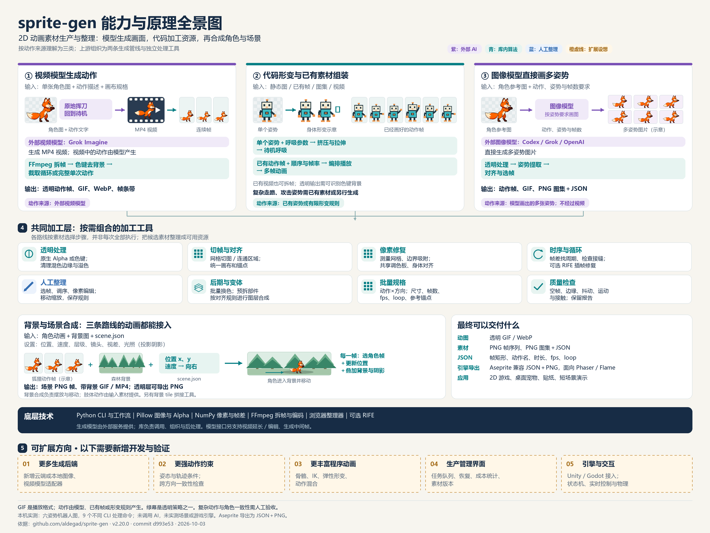
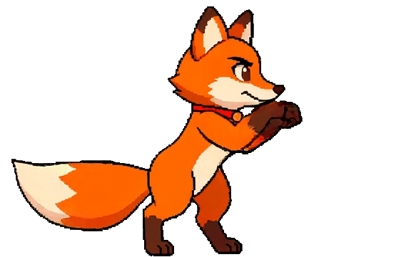
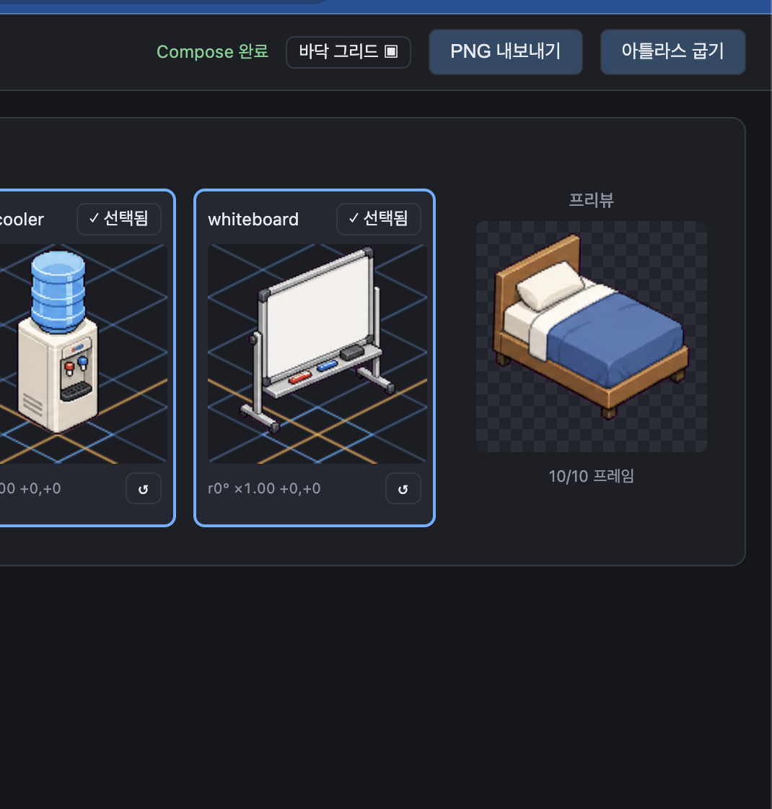

角色动图、精灵图与场景视频
生成或导入动作，抠图、切帧、换色、打包，再把角色动画和背景合成。
sprite-gen 是 2D 动画素材生产与整理工具：连接外部生成模型和代码处理，把图片、视频或已有动作帧变成可播放、可复用的资源。
生成或导入动作，抠图、切帧、换色、打包，再把角色动画和背景合成。
复杂姿态来自 AI 或已有帧；代码可做轻微呼吸、帧编排和按规则移动、叠加素材。
游戏原型、网页与桌面角色、贴纸、视频包装、场景样片和素材库整理。
减少批量素材的重复整理；后续做角色动效或场景工具时，复用其工作流、算法与资源格式。
按动作来源归纳三种方式；背景合成可以接任意路线。橙色虚线区为需开发与验证的扩展方向。

狐狸图＋“原地攻击”：模型生成连续运动，库再拆帧、去背景、截取动作。
动作来自外部视频模型 ② 代码处理与组装单姿势做轻微呼吸；已有六姿势按顺序播放。背景与道具按明确规则叠加。
动作来自既有素材或有限形变 ③ 图像模型模型直接画多姿势，库提取、对齐、选择，再组装 GIF 或精灵图，不经过视频。
动作来自模型画出的多张姿势本页是研究与效果展示：GIF 由浏览器播放，机器人由 Canvas 读取真实输出图集。网页本身没有接入生成服务。

RGBA / LOOP上游提供的透明攻击 GIF：视频模型产生动作，库处理与导出。本页播放现成文件；未在本机生成这只狐狸，原始输入与提示词未完整归档。
查看样例来源多个动作、多个帧，整理在同一张图里。
atlas.png记录矩形位置、播放速度和循环方式。
manifest.jsonGIF / WebP / 帧条带，用于播放与验收。
loop.webp按动作生成姿态，抠图、提取、对齐、打包。
静态图生视频，逐帧处理，找到动作周期。
上游真实素材展示生成结果；本机复现展示无需模型的处理能力。
实际输入是一张已画好六个挥手姿势的品红底图片。库去背景、切帧、打包与换色；动作已经在输入里，外部模型调用为 0。
Canvas 根据库输出的绝对矩形从 PNG 图集中裁出一帧，再按 fps 切换。可暂停、逐帧观察和调速；这里的播放不是生成新动作。
观察源图、旧版清理与软透明度解混的差异。对比图来自上游，保留原图内容。
生成之后，通过 curation webview 选择、排序、移动和检查素材，再烘焙输出。

原始帧被保留，选择和变换写入 curation.json。重新组装图集时才应用这些修改。
当前展示的是上游界面截图。本项目提供图集播放器与结果对比，完整编辑器需在上游环境中运行。
筛帧契约与字段每条路线都说明输入、动作来源、处理原理与输出。背景合成可接在任何路线之后。
上游正式组织为 A「图像到图集」、B「视频到循环」两条生成管线，加上素材处理、后期和场景工具。这里的②解释代码能力，不代表新增一个上游生成模型。
视频模型补出连续运动；图像模型直接画多张姿势。图像接入 Codex / Grok / OpenAI，视频接入 Grok Imagine。参考、布局和方向锚点提供约束，结果仍需人工验收。
生成适配器与透明策略Pillow 与 NumPy 处理背景、Alpha、连通区域、像素网格、调色板和对齐。绿幕只是透明策略之一，原生透明 PNG 可绕过色键清理。已有视频的透明抠图依赖可识别色键背景。
色键与软透明度单张静态姿势按周期轻微挤压、拉伸身体，保护头部与脚端，再烘焙成多帧。可产生待机呼吸；复杂走路和攻击仍需要已画好的姿势或模型生成。
单姿势呼吸的实现播放按时间选择图片；循环分析比较帧差。场景逐帧更新位置和相机，播放已有角色动画，再叠加背景与投影阴影。位置移动不会自动创造新的肢体动作。
场景配置与输出保存规格、调用模型、组织任务、产物与报告。
图片、透明度、颜色、形变、区域与帧差计算。
视频解码、检查与编码；img2webp 编码 WebP，可选 RIFE 用于插帧修复。
GIF 是输出与播放格式。外部模型的训练和内部网络不由库实现；各加工工具按素材需要组合使用。
整理主要生成流程、独立工具、后处理与质量检查；每项都可追溯到源码或规范。
试试“抠图”“图集”“视频”或完整 CLI 命令。
场景建议基于源码和功能契约推导，实际收益需要用自己的素材验证。
短姿态变化是图像行管线的稳定起点。精确脚接触、左右相位对称和循环 locomotion 需要单独通过动作 QA。
提示词不能保证方向、脸部和配饰永远一致。方向检测的高置信度也可能判断错误，需要看实际帧。
默认短动作通常从 4 帧开始。上游的 9 / 12 帧试验出现重复人物、空帧、合并姿态和提取失败。
Aseprite 导出是兼容 JSON 与原 PNG。Phaser / Flame 的描述结构有测试，仓库未在真实引擎运行时执行 CI。
Python ≥ 3.11，独立 venv，Pillow 与 NumPy。
准备相应服务登录或 API key；调用会消耗配额或产生 API 费用。
FFmpeg / FFprobe、img2webp；RIFE 插帧为可选扩展，需要额外环境。
结合当前的开源项目研究，掌握动画资源的生产与整理，为后续角色动效、素材工具和场景产品提供参考。
以后做网页角色、桌面吉祥物、贴纸或游戏原型时，用角色图和动作要求启动生成，再得到透明动画或精灵图。模型负责画，库把结果加工成能播放的素材。
需要生成服务与参考图，身份和动作质量仍需验收。
已有姿势图、PNG 帧或图集可直接抠图、拆分、选帧、换色与重打包。同一动作制作多个配色、导出多个格式，复用帧位置与时序数据。
本机已验证这类处理，无需重新调用 AI。
已有狐狸走路动画和森林背景，再配置向右移动、相机和视差，按规则渲染场景样片。肢体动作由素材提供，代码负责摆放、播放、移动与叠加。
适合短场景验证；场景渲染尚未在本项目本机实测。
研究如何统一规格、隔离生成服务、保存编辑规则、管理候选、测量质量，再输出图片与 JSON。这些设计可用于后续图像生成、素材管理和视频工具。
流程与代码结构提供参考，具体产品界面和业务需开发。
| 目标 / 输入 | 选择什么 | 收益与条件 |
|---|---|---|
| 一张角色图，想要复杂动作 | 视频或多姿势图像模型 | 获得候选；成本和成片质量取决于模型与素材。 |
| 已有姿势、帧图或图集 | 代码处理、整理与导出 | 批量复用，减少反复手工切图与打包。 |
| 静态姿势只需要轻微待机 | 程序化呼吸 | 有限身体形变生成循环，不必生成视频。 |
| 动画与背景都已有 | scene.json 场景合成 | 按位置、速度和相机规则输出带背景 GIF / MP4。 |
| 只把一个现成视频转成 GIF | 简单转换工具即可 | 额外价值主要体现在透明处理、循环选择、批量规格与多格式资源管理。 |
单个 GIF 转换工作不多；维护多个角色、动作、方向、配色和格式时，可重复流程的收益更明显。此判断来自接口和处理方式分析，未做人工耗时或批量性能基准。
新增云端或本地图像、视频模型适配器，统一请求与错误。
姿态、轨迹条件和跨方向校验，减少失败候选。
骨骼、IK、弹性形变、动作混合。
可视化队列、恢复、成本统计、版本和批量验收。
Unity / Godot 加载、状态机、实时操作和物理。
扩展区是后续开发建议。现有场景能力是素材逐帧合成，已有资源导出不等于已具备这些交互模块。
固定源码快照、保留媒体来源，单独记录本机验证范围。
研究日期：2026-10-03 · Asia/Shanghai
d993e5300b4255111e8ee0e29779caea1b3b97bd生成与循环效果引用仓库已有样例。功能和限制以固定 commit 的文档及代码为依据。
本页不测量模型生成成功率，也不把上游样例记为本机生成结果。
已在独立 Python venv 中验证抠图、切帧、图集、换色与导出，完整结果见下方验证记录。
使用几何测试输入，验证处理链路和输出格式。AI 生成、视频服务与复杂人形动作尚未本机实测。
原始动画和对比图来自 sprite-gen 上游文档。代码许可证、第三方算法声明与生成服务规则需分别核对；完整来源记录保留在子项目文档与媒体清单中。